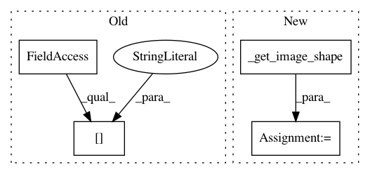

d36d91f990f6198953f88e86773313e4c1280ef9,dataset/batch_image.py,ImagesBatch,_crop_,#ImagesBatch#Any#Any#Any#,384
Before Change
origin = self._calc_origin(shape, origin, image.shape[:2])
if np.all(origin + shape > image.shape[:2]):
shape = image.shape[:2] - origin
row_slice = slice(origin[0], origin[0] + shape[0])
After Change
-------
np.ndarray : cropped image
image_shape = self._get_image_shape(image)
origin = self._calc_origin(shape, origin, image_shape)
if np.all(origin + shape > image_shape):
shape = image_shape - origin
In pattern: SUPERPATTERN
Frequency: 3
Non-data size: 4
Instances
Project Name: analysiscenter/batchflow
Commit Name: d36d91f990f6198953f88e86773313e4c1280ef9
Time: 2018-01-25
Author: g.ivanov@analysiscenter.ru
File Name: dataset/batch_image.py
Class Name: ImagesBatch
Method Name: _crop_
Project Name: analysiscenter/batchflow
Commit Name: d36d91f990f6198953f88e86773313e4c1280ef9
Time: 2018-01-25
Author: g.ivanov@analysiscenter.ru
File Name: dataset/batch_image.py
Class Name: ImagesBatch
Method Name: _put_on_background_
Project Name: analysiscenter/batchflow
Commit Name: d36d91f990f6198953f88e86773313e4c1280ef9
Time: 2018-01-25
Author: g.ivanov@analysiscenter.ru
File Name: dataset/batch_image.py
Class Name: ImagesBatch
Method Name: _resize_